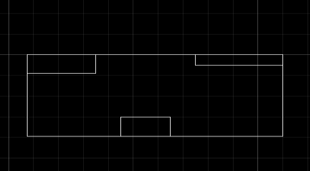
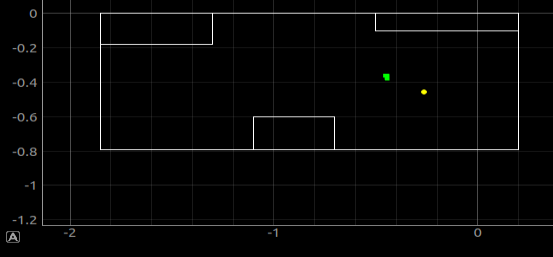
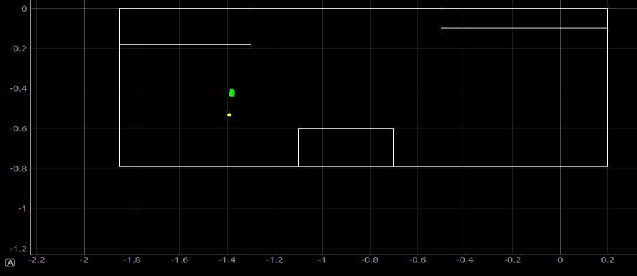
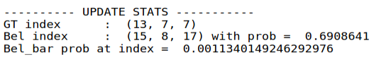
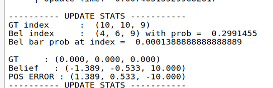

Offline Localization
I started with offline localization. I copied over my map data from Lab7.

I then had to update the mapper call to fit my bounds. I updated min and max x/y as well as the cell size to fit my grid, which resulted in a mapper call of
mapper = Mapper(min_x=-1.85, max_x=.2, min_y=-.79, max_y=0, min_a=-180, max_a=180,
cell_size_x=0.1025, cell_size_y=0.0395, cell_size_a=20,
max_cells_x=20, max_cells_y=20, max_cells_a=18,
ray_length=3, lines=[start_points, end_points], obs_per_cell=18,
robot=robot)
Then, I ran a scan at a given point (-.55, -.37) on my floor. I paired down the data to 18 points evenly spaced by 20 degrees and wrote that data to loc.obs_range_data for the Bayes filter to try and guess where I was. It did a fairly good job, a few cells off, but my cells were very very small to begin with.

These were both fairly close to the two locations I had the robot scan from, with the actual location in green and the projected in yellow.

The confidence was not particularly high, likely due to how small the cells were and how the gyro drifts slightly during measurements, but I believe it would be good enough to do mapping later on in labs.
Next, I moved to online mode. First, I played around with Bluetooth ensuring I could also recieve bluetooth commands on the artemis, which I accomplished using the await theRobot.sendMessage() function. This ended up being fairly easy to implement, so I was able to send a command to tell the robot to perform a scan. I wrote this data to a file, where I paired down the data into the closest increments to 20 degrees as possible.
if(unpack("IQ", data)[0] >= nextIndex + 20):
print(unpack("IQ", data))
f = open(scan.txt", "a")
f.write(str(unpack("IQ", data)))
f.write("\n")
f.close()
nextIndex +=20
(0, 28)
(22, 519)
(44, 240)
(67, 635)
(80, 743)
(101, 476)
(122, 351)
(141, 208)
(160, 106)
(180, 277)
(202, 250)
(223, 278)
(242, 260)
(261, 188)
(282, 472)
(309, 296)
(324, 86)
(343, 454)
(360, 329)
loop = asyncio.get_event_loop()
asyncio.gather(robotTest(loop))
theRobot = theRobotHolder.getRobot()